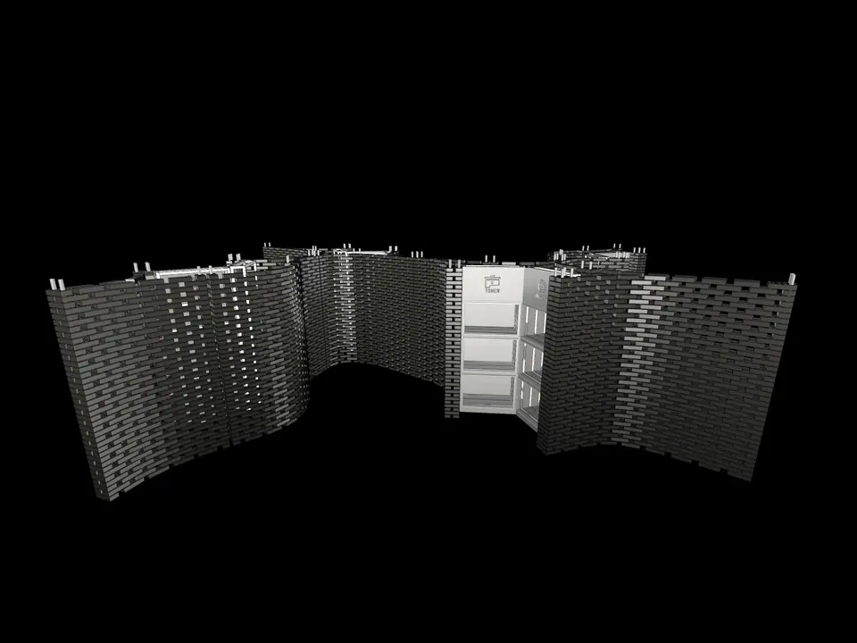
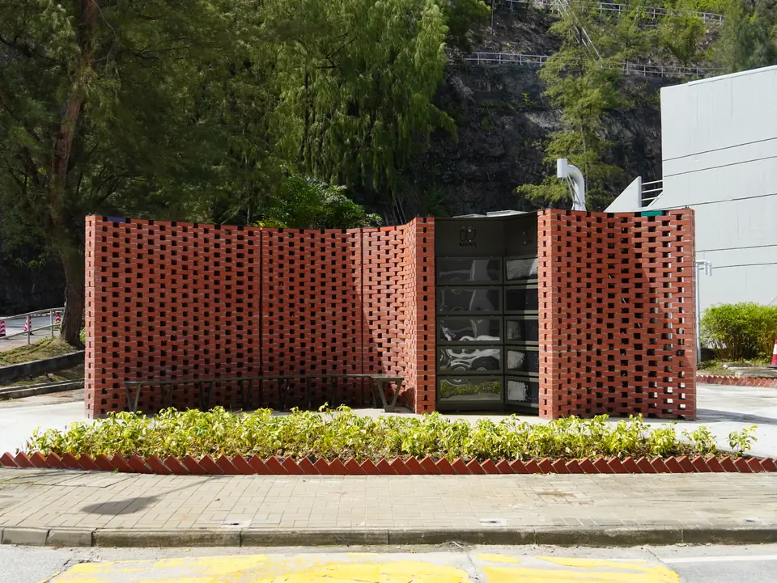
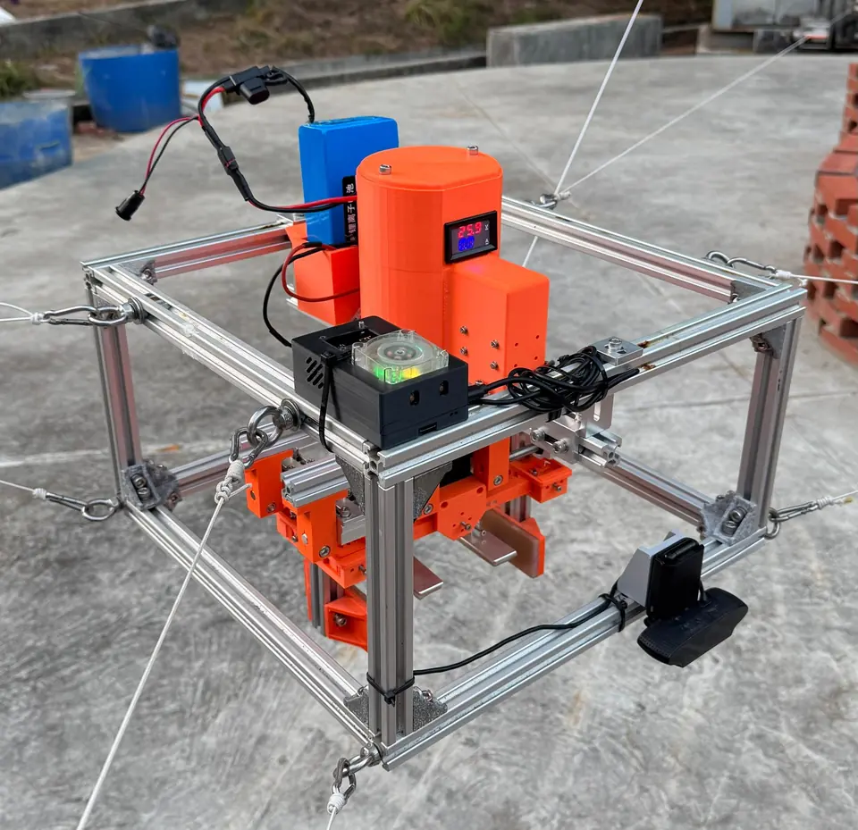
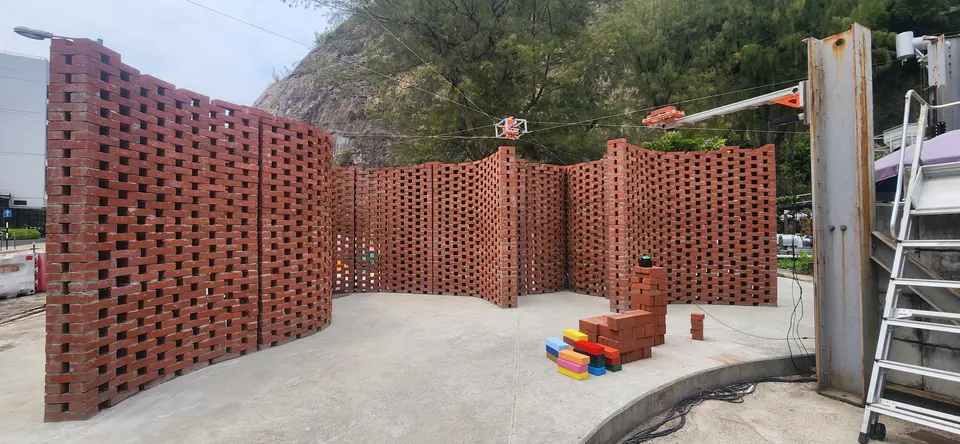
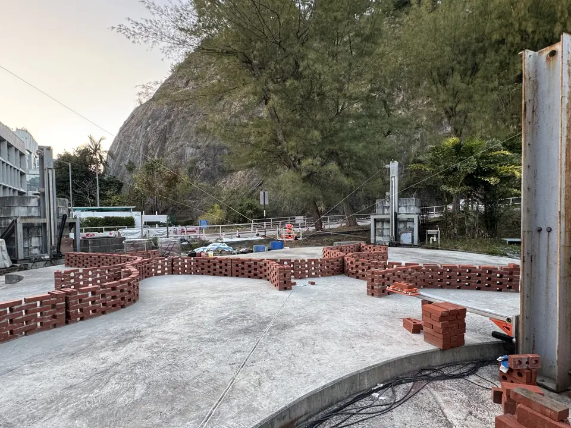

CU-Brick: Cable-Driven Bricklaying Robot





Project Overview
CU-Brick is a cable-driven parallel robot built for automated bricklaying. At the Yard for Environmental Sustainability (YES) Pavilion, it constructed a permeable brick structure across a 13 m by 9 m work area, reaching 2.5 m in height with 40 layers and more than 5,800 bricks.
Fiducial-marker localization and 3D scanning support real-time calibration, while an elevation system shifts the robot's workspace to build taller structures without cable interference.
TVB News: CU-Brick media coverage
Now News: CU-Brick media coverage
i-CABLE News: CU-Brick media coverage
RTHK News: CU-Brick media coverage
Awards & Recognition
- CU-Brick: Second Runner-up, Open Section, YPEC 2025
- CU-Brick: Merit Award, Open Category, OSH Innovation and Technology Award 2026
Publication & Project Updates
- Peer-reviewed CU-Brick paper presented at CableCon 2025
- CableCon 2025 presentation update
- YPEC 2025 exhibition update
Selected Contributions
- Designed and implemented the cable-driven robot for a full-scale construction project.
- Delivered autonomous construction of a 2.5 m-high, 40-layer structure using more than 5,800 bricks.
- Integrated fiducial markers and high-resolution 3D spatial data for calibration and localization.
- Designed and manufactured the robot's electrical and control boxes.
- Co-authored and presented the CU-Brick paper at CableCon 2025.
- Supported public demonstrations and coverage by TVB News, Now News, i-CABLE News, and RTHK.
- Helped prepare the project for YPEC 2025, where it was named second runner-up in the Open Section, and for the 2026 OSH Innovation and Technology Award, where it received an Open Category Merit Award.